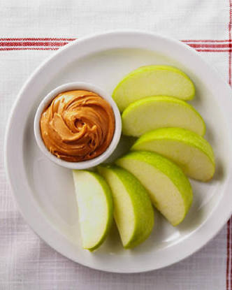

Apple Slices with Peanut Butter

Description
A simple two-ingredient classic snack that perfectly balances crisp, sweet fruit with rich, savory protein.
Ingredients
- 1 crisp apple (such as Gala or Granny Smith)
- 2 tablespoons natural peanut butter (or almond butter)
Method
- Prep the Fruit: Thoroughly wash the apple under cold running water and dry it with a towel.
- Core and Slice: Cut the apple in half, remove the center core and seeds, and cut it into even, bite-sized slices.
- Plate the Snack: Arrange the fresh apple slices neatly on a small serving plate.
- Portion the Dip: Scoop out the natural peanut butter and place it in a small pile or ramekin next to the apples.
- Serve: Serve immediately while the apple slices are crisp, using them to dip into the peanut butter.